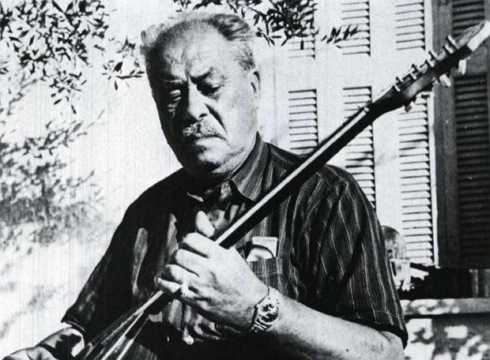

Osi ehune pola lefta (cover)
Creation
I might have been a bit dizzy and was trying some alternate chords over this song's melody. I ended up with a chord progression that was quite interesting. I then proceeded to play these chords over the original song's video slowed down by 50%. It was.. something! I had to make a song out of it.
Content
The original song belongs to Vamvakaris - a patriarch of the greek rebetiko music.
Υou can listen to the original song on YouTube:
The song was mixed in Cubase - it was the program I mostly used back then (March 2018). In the beginning I layed down my chord progression with my e.guitar. I then used a friend's borrowed fretless bass to write the bassline. I added percussions and then played the main melody with my trumpet! Finally I wrote the vocals and also sampled a bit of the original song into the cover.
The chord progression is: 2 beats Asus4/E, 2 beats Ammaj7, 2 beats Bm7, 3 beats Bbdom7#5. 2 beats Asus4/E, 2 beats Ammaj7, 2 beats Bm7, 3 beats Bbdom7#5. 2 beats Asus4/E, 2 beats F#m7, 2 beats Bm7, 3 beats Bbdom7#5. 2 beats Asus4/E, 2 beats Ammaj7, 2 beats Bm7, 3 beats Bbdom7#5. The beats in each iteration add up to 9 since the original rebetiko has a classic time signature of 9/8. The following image shows these chords on standard tuning.